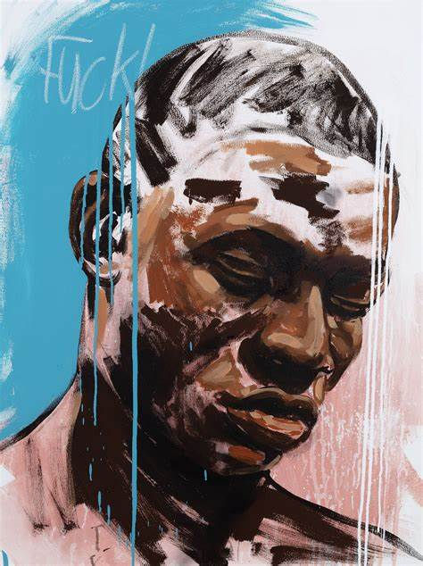
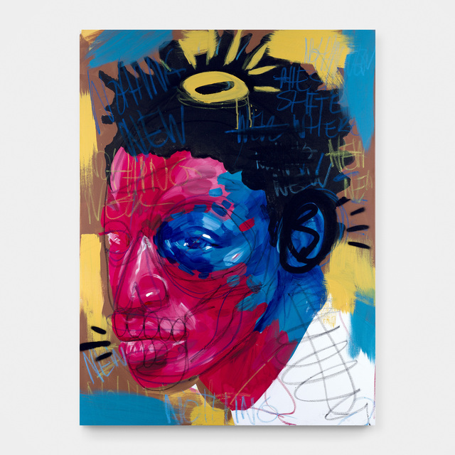

Man by Seth Pimentel

State of Mind by Seth Pimentel

Bright Eyes Seth Pimentel
Rocky by Seth Pimentel
Seth Pimentel (b. 1995 - Johannesburg, RSA) is an illustrator, painter and experimental visual artist who currently living and working in Johannesburg.
Pimentel focuses on pushing the boundaries of contemporary portraiture by merging painting, digital illustration and drawing into a hybrid of experimentation. Continuously developing his style and approach towards addressing themes of identity,
mental illness and modern life in the digital age, he uses his practice to highlight his lived experiences in post-colonial South Africa.
Pimentel channels all of his energy and emotion into newer, bigger bodies of traditional and digital pieces and has collaborated with numerous brands and artists from South Africa and around the world such as Netflix, Converse, Redbull, SneakerLab, Jameson and Adobe.
Man by Seth Pimentel
State of Mind by Seth Pimentel
Bright Eyes Seth Pimentel
Rocky by Seth Pimentel